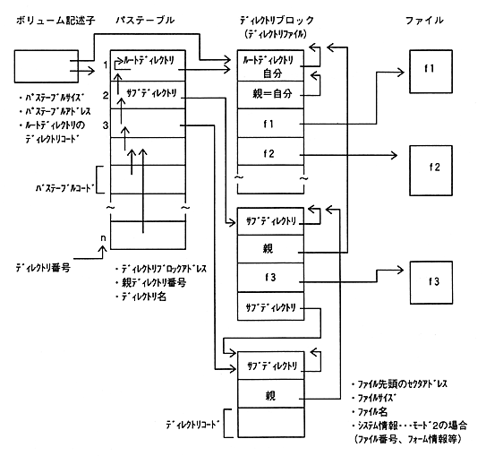

-Volume descriptor: It is allocated from CD 00:02:16 (FAD = 166 = A6H). .. (Generally 2 seconds and 16 frames from the beginning of the last session) -Path table: A set of path table records. The size and address of the path table Recorded in the volume descriptor. -Path table record: Corresponds to one directory (root, sub). The record position is the directory number. (1 to n) Information about the directory is described in the directory block. Directory block: A collection of directory records. A directory block is a single file. It is considered as Il. (Directory file) -Directory record: Corresponds to one file (including directories).
Figure 6.1 Data structure of file management on CD-ROM (ISO9660)